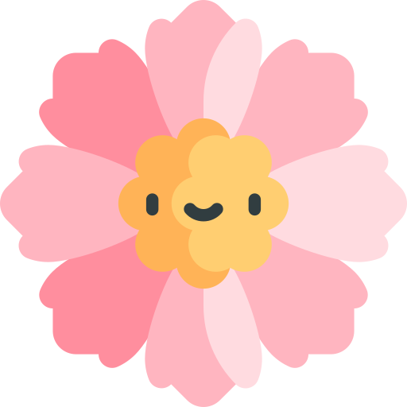

Me considero una persona comprometida y empática.
Me gusta trabajar en conjunto e intercambiar ideas.
Soy creativa, risueña y meticulosa.
Edad: 22 años
Comuna: Ñuñoa
Ocupación: Estudiante
Rut: 20.572.365-K
Celular: +56978977852
Babysitter & Petsitter | 2021 – actual
Clases particulares de Pintura y Dibujo | 2021 – actual
Vendedora Full Time Óptica Place Vendome | 2021 (Octubre – Enero)
Consultora de Belleza pt Falabella | 2021 (Agosto – Septiembre)